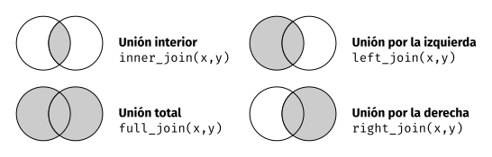
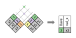

13 Datos relacionales
13.1 Introducción
Es raro que un análisis de datos involucre una única tabla de datos. Lo típico es que tengas muchas tablas que debes combinar para responder a tus preguntas de interés. De manera colectiva, se le llama datos relacionales a esas múltiples tablas de datos, ya que sus relaciones, y no solo los conjuntos de datos individuales, son importantes.
Las relaciones siempre se definen sobre un par de tablas. Todas las otras relaciones se construyen sobre esta idea simple: las relaciones entre tres o más tablas son siempre una propiedad de las relaciones entre cada par. ¡A veces ambos elementos de un par pueden ser la misma tabla! Esto se necesita si, por ejemplo, tienes una tabla de personas y cada persona tiene una referencia a sus padres.
Para trabajar con datos relacionales necesitas verbos que funcionen con pares de tablas. Existen tres familias de verbos diseñadas para trabajar con datos relacionales:
Uniones de transformación (del inglés mutating joins), que agregan nuevas variables a un data frame a partir de las observaciones coincidentes en otra tabla.
Uniones de filtro (del inglés filtering joins), que filtran observaciones en un data frame con base en si coinciden o no con una observación de otra tabla.
Operaciones de conjuntos (del inglés set operations), que tratan las observaciones como elementos de un conjunto.
El lugar más común para encontrar datos relacionales es en un sistema relacional de administración de bases de datos (Relational Data Base Management System en inglés), un concepto que abarca casi todas las bases de datos modernas. Si has usado una base de datos con anterioridad, casi seguramente fue SQL. Si es así, los conceptos de este capítulo debiesen ser familiares, aunque su expresión en dplyr es un poco distinta. En términos generales, dplyr es un poco más fácil de usar que SQLes, ya que dplyr se especializa en el análisis de datos: facilita las operaciones habituales, a expensas de dificultar otras que no se requieren a menudo para el análisis de datos.
13.1.1 Prerrequisitos
Vamos a explorar datos relacionales contenidos en el paquete datos usando los verbos para dos tablas de dplyr.
13.2 Datos sobre vuelos
Usaremos datos sobre vuelos desde y hacia Nueva York para aprender sobre datos relacionales1. El paquete datos contiene cinco tibbles que utilizaremos para este propósito: aerolineas, aeropuertos, aviones y clima, que se relacionan con la tabla vuelos (que se usó en el capítulo sobre [transformación de datos]):
aerolineaspermite observar el nombre completo de la aerolínea a partir de su código abreviado:
::: {.cell} ::: {.cell-output .cell-output-stdout} # A tibble: 16 × 2 aerolinea nombre <chr> <chr> 1 9E Endeavor Air Inc. 2 AA American Airlines Inc. 3 AS Alaska Airlines Inc. 4 B6 JetBlue Airways 5 DL Delta Air Lines Inc. 6 EV ExpressJet Airlines Inc. 7 F9 Frontier Airlines Inc. 8 FL AirTran Airways Corporation 9 HA Hawaiian Airlines Inc. 10 MQ Envoy Air 11 OO SkyWest Airlines Inc. 12 UA United Air Lines Inc. 13 US US Airways Inc. 14 VX Virgin America 15 WN Southwest Airlines Co. 16 YV Mesa Airlines Inc. ::: :::
aeropuertosentrega información de cada aeropuerto, identificado por sucódigo:
::: {.cell} ::: {.cell-output .cell-output-stdout} # A tibble: 1,458 × 8 codigo_aeropuerto nombre latitud longitud altura zona_horaria horario_verano <chr> <chr> <dbl> <dbl> <dbl> <dbl> <chr> 1 04G Lansdo… 41.1 -80.6 1044 -5 A 2 06A Moton … 32.5 -85.7 264 -6 A 3 06C Schaum… 42.0 -88.1 801 -6 A 4 06N Randal… 41.4 -74.4 523 -5 A 5 09J Jekyll… 31.1 -81.4 11 -5 A 6 0A9 Elizab… 36.4 -82.2 1593 -5 A 7 0G6 Willia… 41.5 -84.5 730 -5 A 8 0G7 Finger… 42.9 -76.8 492 -5 A 9 0P2 Shoest… 39.8 -76.6 1000 -5 U 10 0S9 Jeffer… 48.1 -123. 108 -8 A # ℹ 1,448 more rows # ℹ 1 more variable: zona_horaria_iana <chr> ::: :::
avionesentrega información de cada avión, identificado por sucodigo_cola:
::: {.cell} ::: {.cell-output .cell-output-stdout} # A tibble: 3,322 × 9 codigo_cola anio tipo fabricante modelo motores asientos velocidad <chr> <int> <chr> <chr> <chr> <int> <int> <int> 1 N10156 2004 Ala fija mult… EMBRAER EMB-1… 2 55 NA 2 N102UW 1998 Ala fija mult… AIRBUS IN… A320-… 2 182 NA 3 N103US 1999 Ala fija mult… AIRBUS IN… A320-… 2 182 NA 4 N104UW 1999 Ala fija mult… AIRBUS IN… A320-… 2 182 NA 5 N10575 2002 Ala fija mult… EMBRAER EMB-1… 2 55 NA 6 N105UW 1999 Ala fija mult… AIRBUS IN… A320-… 2 182 NA 7 N107US 1999 Ala fija mult… AIRBUS IN… A320-… 2 182 NA 8 N108UW 1999 Ala fija mult… AIRBUS IN… A320-… 2 182 NA 9 N109UW 1999 Ala fija mult… AIRBUS IN… A320-… 2 182 NA 10 N110UW 1999 Ala fija mult… AIRBUS IN… A320-… 2 182 NA # ℹ 3,312 more rows # ℹ 1 more variable: tipo_motor <chr> ::: :::
climaentrega información del clima en cada aeropuerto de Nueva York para cada hora:
::: {.cell} ::: {.cell-output .cell-output-stdout} # A tibble: 26,115 × 15 origen anio mes dia hora temperatura punto_rocio humedad <chr> <int> <int> <int> <int> <dbl> <dbl> <dbl> 1 EWR 2013 1 1 1 39.0 26.1 59.4 2 EWR 2013 1 1 2 39.0 27.0 61.6 3 EWR 2013 1 1 3 39.0 28.0 64.4 4 EWR 2013 1 1 4 39.9 28.0 62.2 5 EWR 2013 1 1 5 39.0 28.0 64.4 6 EWR 2013 1 1 6 37.9 28.0 67.2 7 EWR 2013 1 1 7 39.0 28.0 64.4 8 EWR 2013 1 1 8 39.9 28.0 62.2 9 EWR 2013 1 1 9 39.9 28.0 62.2 10 EWR 2013 1 1 10 41 28.0 59.6 # ℹ 26,105 more rows # ℹ 7 more variables: direccion_viento <dbl>, velocidad_viento <dbl>, # velocidad_rafaga <dbl>, precipitacion <dbl>, presion <dbl>, # visibilidad <dbl>, fecha_hora <dttm> ::: :::
Una forma de mostrar las relaciones entre las diferentes tablas es mediante un diagrama:
Este diagrama es un poco abrumador, ¡pero es simple comparado con algunos que verás en el exterior! La clave para entender estos diagramas es recordar que cada relación siempre involucra un par de tablas. No necesitas entender todo el diagrama, necesitas entender la cadena de relaciones entre las tablas que te interesan.
En estos datos:
vuelosse connecta conavionesa través de la variablecodigo_cola.vuelosse conecta conaerolineasa través de la variablecodigo_carrier.vuelosse conecta conaeropuertosde dos formas: a través de las variablesorigenydestino.vuelosse conecta conclimaa través de las variablesorigen(la ubicación),anio,mes,diayhora(el horario).
13.2.1 Ejercicios
Imagina que necesitas dibujar (aproximadamente) la ruta que cada avión vuela desde su origen hasta el destino. ¿Qué variables necesitarías? ¿Qué tablas necesitarías combinar?
Olvidamos dibujar la relación entre
climayaeropuertos. ¿Cuál es la relación y cómo debería aparecer en el diagrama?climaúnicamente contiene información de los aeropuertos de origen (Nueva York). Si incluyera registros para todos los aeropuertos de EEUU, ¿qué relación tendría convuelos?Sabemos que hay días “especiales” en el año y pocas personas suelen volar en ellos. ¿Cómo se representarían en un data frame? ¿Cuáles serían las claves primarias de esa tabla? ¿Cómo se conectaría con las tablas existentes?
13.3 Claves
Las variables usadas para conectar cada par de variables se llaman claves (del inglés key). Una clave es una variable (o un conjunto de variables) que identifican de manera única una observación. En casos simples, una sola variable es suficiente para identificar una observación. Por ejemplo, cada avión está identificado de forma única por su codigo_cola. En otros casos, se pueden necesitar múltiples variables. Por ejemplo, para identificar una observación en clima se necesitan cinco variables: anio, mes, dia, hora y origen.
Existen dos tipos de claves:
Una clave primaria identifica únicamente una observación en su propia tabla. Por ejemplo,
aviones$codigo_colaes una clave primaria, ya que identifica de manera única cada avión en la tablaaviones.Una clave foránea únicamente identifica una observación en otra tabla. Por ejemplo,
vuelos$codigo_colaes una clave foránea, ya que aparece en la tablavuelos, en la que une cada vuelo con un único avión.
Una variable puede ser clave primaria y clave foránea a la vez. Por ejemplo, origen es parte de la clave primaria clima y también una clave foránea de aeropuertos.
Una vez que identificas las claves primarias en tus tablas, es una buena práctica verificar que identifican de forma única cada observación. Una forma de hacerlo es usar count() con las claves primarias y buscar las entradas con n mayor a uno:
# A tibble: 0 × 2
# ℹ 2 variables: codigo_cola <chr>, n <int># A tibble: 3 × 6
anio mes dia hora origen n
<int> <int> <int> <int> <chr> <int>
1 2013 11 3 1 EWR 2
2 2013 11 3 1 JFK 2
3 2013 11 3 1 LGA 2A veces una tabla puede no tener una clave primaria explícita: cada fila es una observación, pero no existe una combinación de variables que la identifique de forma confiable. Por ejemplo, ¿cuál es la clave primaria en la tabla vuelos? Quizás pienses que podría ser la fecha más el vuelo o el código de cola, pero ninguna de esas variables es única:
# A tibble: 29,768 × 5
anio mes dia vuelo n
<int> <int> <int> <int> <int>
1 2013 1 1 1 2
2 2013 1 1 3 2
3 2013 1 1 4 2
4 2013 1 1 11 3
5 2013 1 1 15 2
6 2013 1 1 21 2
7 2013 1 1 27 4
8 2013 1 1 31 2
9 2013 1 1 32 2
10 2013 1 1 35 2
# ℹ 29,758 more rows# A tibble: 64,928 × 5
anio mes dia codigo_cola n
<int> <int> <int> <chr> <int>
1 2013 1 1 N0EGMQ 2
2 2013 1 1 N11189 2
3 2013 1 1 N11536 2
4 2013 1 1 N11544 3
5 2013 1 1 N11551 2
6 2013 1 1 N12540 2
7 2013 1 1 N12567 2
8 2013 1 1 N13123 2
9 2013 1 1 N13538 3
10 2013 1 1 N13566 3
# ℹ 64,918 more rowsAl comenzar a trabajar con estos datos, ingenuamente asumimos que cada número de vuelo sería usado solo una vez al día: eso haría mucho más simple comunicar problemas con un vuelo específico. ¡Desafortunadamente este no es el caso! Si una tabla no tiene una clave primaria, a veces es útil incluir una con mutate() y row_number() (número de fila). Eso simplifica hacer coincidir observaciones una vez que haz hecho algunos filtros y quieres volver a verificar con los datos originales. Esto se llama clave subrogada.
Una clave primaria y su correspondiente clave foránea en otra tabla forman una relación. Las relaciones son típicamente uno-a-muchos. Por ejemplo, cada vuelo tiene un avión, pero cada avión tiene muchos vuelos. En otros datos, ocasionalmente verás relaciones uno-a-uno. Puedes pensar esto como un caso especial de uno-a-muchos. Puedes modelar relaciones muchos-a-muchos como relaciones de la forma muchos-a-uno y uno-a-muchos. Por ejemplo, en estos datos existe una relación muchos-a-muchos entre aerolíneas y aeropuertos: cada aerolínea vuela a muchos aeropuertos, cada aeropuerto recibe a muchas aerolíneas.
13.3.1 Ejercicios
Agrega una clave subrogada a
vuelos.Identifica las claves en los siguientes conjuntos de datos
datos::bateadoresdatos::nombresdatos::atmosferadatos::vehiculosdatos::diamantes
(Puede que necesites leer un poco de documentación.)
Dibuja un diagrama que ilustre las conexiones entre las tablas
bateadores,personasysalariosincluidas en el paquete datos. Dibuja otro diagrama que muestre la relación entrepersonas,dirigentesypremios_dirigentes.¿Cómo caracterizarías las relación entre
bateadores,lanzadoresyjardineros?
13.4 Uniones de transformación
La primera herramienta que miraremos para combinar pares de variables es la unión de transformación (mutating join). Una unión de transformación te permite combinar variables a partir de dos tablas. Primero busca coincidencias de observaciones de acuerdo a sus claves y luego copia las variables de una tabla en la otra.
Tal como mutate(), las funciones de unión agregan variables hacia la derecha, por lo que si tienes muchas variables inicialmente, las nuevas variables no se imprimirán. Para estos ejemplos, crearemos un conjunto de datos más angosto para que sea más fácil ver qué es lo que está ocurriendo:
# A tibble: 336,776 × 8
anio mes dia hora origen destino codigo_cola aerolinea
<int> <int> <int> <dbl> <chr> <chr> <chr> <chr>
1 2013 1 1 5 EWR IAH N14228 UA
2 2013 1 1 5 LGA IAH N24211 UA
3 2013 1 1 5 JFK MIA N619AA AA
4 2013 1 1 5 JFK BQN N804JB B6
5 2013 1 1 6 LGA ATL N668DN DL
6 2013 1 1 5 EWR ORD N39463 UA
7 2013 1 1 6 EWR FLL N516JB B6
8 2013 1 1 6 LGA IAD N829AS EV
9 2013 1 1 6 JFK MCO N593JB B6
10 2013 1 1 6 LGA ORD N3ALAA AA
# ℹ 336,766 more rows(Recuerda que en RStudio puedes también usar View() para evitar este problema.)
Imagina que quieres incluir el nombre completo de la aerolínea en vuelos2. Puedes combinar los datos de aerolinas y vuelos2 con left_join() (union_izquierda):
# A tibble: 336,776 × 7
anio mes dia hora codigo_cola aerolinea nombre
<int> <int> <int> <dbl> <chr> <chr> <chr>
1 2013 1 1 5 N14228 UA United Air Lines Inc.
2 2013 1 1 5 N24211 UA United Air Lines Inc.
3 2013 1 1 5 N619AA AA American Airlines Inc.
4 2013 1 1 5 N804JB B6 JetBlue Airways
5 2013 1 1 6 N668DN DL Delta Air Lines Inc.
6 2013 1 1 5 N39463 UA United Air Lines Inc.
7 2013 1 1 6 N516JB B6 JetBlue Airways
8 2013 1 1 6 N829AS EV ExpressJet Airlines Inc.
9 2013 1 1 6 N593JB B6 JetBlue Airways
10 2013 1 1 6 N3ALAA AA American Airlines Inc.
# ℹ 336,766 more rowsEl resultado de unir aerolineas y vuelos2 es la inclusión de una variable adicional: nombre. Esta es la razón de que llamemos unión de transformación a este tipo de unión. En este caso, podrías obtener el mismo resultado usando mutate() junto a las operaciones de filtro de R base:
# A tibble: 336,776 × 7
anio mes dia hora codigo_cola aerolinea nombre
<int> <int> <int> <dbl> <chr> <chr> <chr>
1 2013 1 1 5 N14228 UA United Air Lines Inc.
2 2013 1 1 5 N24211 UA United Air Lines Inc.
3 2013 1 1 5 N619AA AA American Airlines Inc.
4 2013 1 1 5 N804JB B6 JetBlue Airways
5 2013 1 1 6 N668DN DL Delta Air Lines Inc.
6 2013 1 1 5 N39463 UA United Air Lines Inc.
7 2013 1 1 6 N516JB B6 JetBlue Airways
8 2013 1 1 6 N829AS EV ExpressJet Airlines Inc.
9 2013 1 1 6 N593JB B6 JetBlue Airways
10 2013 1 1 6 N3ALAA AA American Airlines Inc.
# ℹ 336,766 more rowsSin embargo, esto último es difícil de generalizar cuando necesitas hacer coincidir múltiples variables y requiere hacer una lectura detenida para entender lo que se quiere hacer.
En las siguientes secciones explicaremos en detalle cómo funcionan las uniones de transformación. Comenzarás aprendiendo una representación visual útil de las uniones. Luego usaremos eso para explicar las cuatro uniones de transformación: la unión interior y las tres uniones exteriores. Cuando trabajas con datos reales, las claves no siempre identifican a las observaciones de forma única. Es por eso que a continuación hablaremos de lo que ocurre cuando no existe una coincidencia única. Finalmente, aprenderás cómo decirle a dplyr qué variables son las claves para una unión determinada.
13.4.1 Entendiendo las uniones
Para ayudarte a entender las uniones, usaremos una representación gráfica:

La columna coloreada representa la variable “clave”: estas se usan para unir filas entre las tablas. La columa gris representa la columna “valor” que se usa en todo el proceso. En estos ejemplos te mostraremos una única clave, pero la idea es generalizable de manera directa a múltiples claves y múltiples valores.
Una unión es una forma de conectar cada fila en x con cero, una o más filas en y. El siguiente diagrama muestra cada coincidencia potencial como una intersección de pares de líneas.

(Si observas detenidamente, te darás cuenta de que hemos cambiado el orden de las columnas clave y valor en x. Esto es para enfatizar que las uniones encuentran coincidencias basadas en las claves; el valor simplemente se traslada durante el proceso.)
En la unión que mostramos, las coincidencias se indican con puntos. El número de puntos es igual al número de coincidencias y al número de filas en la salida.

13.4.2 Unión interior
La forma más simple de unión es la unión interior (del inglés inner join). Una unión interior une pares de observaciones siempre que sus claves sean iguales:
(Para ser precisos, esto corresponde a una unión de igualdad (o equijoin) interior, debido a que las claves se unen usando el operador de igualdad. Dado que muchas uniones son uniones de igualdad, por lo general omitimos esa especificación.)
El output de una unión interior es un nuevo data frame que contiene la clave, los valores de x y los valores de y. Usamos by (según) para indicar a dplyr qué variable es la clave:
# A tibble: 2 × 3
key val_x val_y
<dbl> <chr> <chr>
1 1 x1 y1
2 2 x2 y2 La propiedad más importante de una unión interior es que las filas no coincidentes no se incluyen en el resultado. Esto significa que generalmente las uniones interiores no son apropiadas para su uso en el análisis de datos dado que es muy fácil perder observaciones.
13.4.3 Uniones exteriores
Una unión interior mantiene las observaciones que aparecen en ambas tablas. Una unión exterior mantiene las observaciones que aparecen en al menos una de las tablas. Existen tres tipos de uniones exteriores:
- Una unión izquierda (left join) mantiene todas las observaciones en
x. - Una unión derecha (right join) mantiene todas las observaciones en
y. - Una unión completa (full join) mantiene todas las observaciones en
xey.
Estas uniones funcionan agregando una observación “virtual” adicional a cada tabla. Esta observación tiene una clave que siempre coincide (de no haber otras claves coincidentes) y un valor que se llena con NA.
Gráficamente corresponde a lo siguiente:

La unión que más frecuentemente se usa es la unión izquierda: úsala cuando necesites buscar datos adicionales en otra tabla, dado que preserva las observaciones originales incluso cuando no hay coincidencias. La unión izquierda debiera ser tu unión por defecto, a menos que tengas un motivo importante para preferir una de las otras.
Otra forma de ilustrar diferentes tipos de uniones es mediante un diagrama de Venn:

Sin embargo, esta no es una buena representación. Puede ayudar a recordar qué uniones preservan las observaciones en qué tabla pero esto tiene una limitante importante: un diagrama de Venn no puede mostrar qué ocurre con las claves que no identifican de manera única una observación.
13.4.4 Claves duplicadas
Hasta ahora todos los diagramas han asumido que las claves son únicas. Pero ese no siempre es así. Esta sección explica qué ocurre en esos casos. Existen dos posibilidades:
- Una tabla tiene claves duplicadas. Esto es útil cuando quieres agregar información adicional dado que típicamente existe una relación uno a muchos.
::: {.cell} ::: {.cell-output-display}  ::: :::
::: :::
Nota que hemos puesto la columna clave en una posición ligeramente distinta en el output. Esto refleja que la clave es una clave primaria en y y una clave foránea en x.
::: {.cell} ::: {.cell-output .cell-output-stdout} # A tibble: 4 × 3 key val_x val_y <dbl> <chr> <chr> 1 1 x1 y1 2 2 x2 y2 3 2 x3 y2 4 1 x4 y1 ::: :::
- Ambas tablas tienen claves duplicadas. Esto es usualmente un error debido a que en ninguna de las tablas las claves identifican de manera única una observación. Cuando unes claves duplicadas, se obtienen todas las posibles combinaciones, es decir, el producto cartesiano:
::: {.cell} ::: {.cell-output-display}  ::: :::
::: :::
::: {.cell} ::: {.cell-output .cell-output-stdout} # A tibble: 6 × 3 key val_x val_y <dbl> <chr> <chr> 1 1 x1 y1 2 2 x2 y2 3 2 x2 y3 4 2 x3 y2 5 2 x3 y3 6 3 x4 y4 ::: :::
13.4.5 Definiendo las columnas clave
Hasta ahora, los pares de tablas siempre se han unido de acuerdo a una única variable y esa variable tiene el mismo nombre en ambas tablas. Esta restricción se expresa de la forma by = "key". Puedes usar otros valores de by para conectar las tablas de otras maneras:
- Por defecto,
by = NULL, usa todas las variables que aparecen en ambas tablas, lo que se conoce como unión natural. Por ejemplo, las tablas vuelos y clima coinciden en sus variables comunes:anio,mes,dia,horayorigen.
::: {.cell} ::: {.cell-output .cell-output-stdout} # A tibble: 336,776 × 18 anio mes dia hora origen destino codigo_cola aerolinea temperatura <int> <int> <int> <dbl> <chr> <chr> <chr> <chr> <dbl> 1 2013 1 1 5 EWR IAH N14228 UA 39.0 2 2013 1 1 5 LGA IAH N24211 UA 39.9 3 2013 1 1 5 JFK MIA N619AA AA 39.0 4 2013 1 1 5 JFK BQN N804JB B6 39.0 5 2013 1 1 6 LGA ATL N668DN DL 39.9 6 2013 1 1 5 EWR ORD N39463 UA 39.0 7 2013 1 1 6 EWR FLL N516JB B6 37.9 8 2013 1 1 6 LGA IAD N829AS EV 39.9 9 2013 1 1 6 JFK MCO N593JB B6 37.9 10 2013 1 1 6 LGA ORD N3ALAA AA 39.9 # ℹ 336,766 more rows # ℹ 9 more variables: punto_rocio <dbl>, humedad <dbl>, direccion_viento <dbl>, # velocidad_viento <dbl>, velocidad_rafaga <dbl>, precipitacion <dbl>, # presion <dbl>, visibilidad <dbl>, fecha_hora <dttm> ::: :::
- Un vector de caracteres,
by = "x". Esto es similar a una unión natural, pero usa algunas de las variables comunes. Por ejemplo,vuelosyavionestienen la variableanio, pero esta significa cosas distintas en cada tabla por lo que queremos unir porcodigo_cola.
::: {.cell} ::: {.cell-output .cell-output-stdout} # A tibble: 336,776 × 16 anio.x mes dia hora origen destino codigo_cola aerolinea anio.y tipo <int> <int> <int> <dbl> <chr> <chr> <chr> <chr> <int> <chr> 1 2013 1 1 5 EWR IAH N14228 UA 1999 Ala fij… 2 2013 1 1 5 LGA IAH N24211 UA 1998 Ala fij… 3 2013 1 1 5 JFK MIA N619AA AA 1990 Ala fij… 4 2013 1 1 5 JFK BQN N804JB B6 2012 Ala fij… 5 2013 1 1 6 LGA ATL N668DN DL 1991 Ala fij… 6 2013 1 1 5 EWR ORD N39463 UA 2012 Ala fij… 7 2013 1 1 6 EWR FLL N516JB B6 2000 Ala fij… 8 2013 1 1 6 LGA IAD N829AS EV 1998 Ala fij… 9 2013 1 1 6 JFK MCO N593JB B6 2004 Ala fij… 10 2013 1 1 6 LGA ORD N3ALAA AA NA <NA> # ℹ 336,766 more rows # ℹ 6 more variables: fabricante <chr>, modelo <chr>, motores <int>, # asientos <int>, velocidad <int>, tipo_motor <chr> ::: :::
Nota que la variable anio (que aparece en los dos data frames de entrada, pero que no es igual en ambos casos) se desambigua con un sufijo en el output.
- Un vector de caracteres con nombres:
by = c("a" = "b"). Esto va a unir la variableaen la tablaxcon la variablaben la tablay. Las variables dexse usarán en el output.
Por ejemplo, si queremos dibujar un mapa necesitamos combinar los datos de vuelos con los datos de aeropuertos, que contienen la ubicación de cada uno (latitud y longitud). Cada vuelo tiene un aeropuerto de origen y destino, por lo que necesitamos especficar cuál queremos unir:
::: {.cell} ::: {.cell-output .cell-output-stdout} # A tibble: 336,776 × 15 anio mes dia hora origen destino codigo_cola aerolinea nombre latitud <int> <int> <int> <dbl> <chr> <chr> <chr> <chr> <chr> <dbl> 1 2013 1 1 5 EWR IAH N14228 UA Newark … 40.7 2 2013 1 1 5 LGA IAH N24211 UA La Guar… 40.8 3 2013 1 1 5 JFK MIA N619AA AA John F … 40.6 4 2013 1 1 5 JFK BQN N804JB B6 John F … 40.6 5 2013 1 1 6 LGA ATL N668DN DL La Guar… 40.8 6 2013 1 1 5 EWR ORD N39463 UA Newark … 40.7 7 2013 1 1 6 EWR FLL N516JB B6 Newark … 40.7 8 2013 1 1 6 LGA IAD N829AS EV La Guar… 40.8 9 2013 1 1 6 JFK MCO N593JB B6 John F … 40.6 10 2013 1 1 6 LGA ORD N3ALAA AA La Guar… 40.8 # ℹ 336,766 more rows # ℹ 5 more variables: longitud <dbl>, altura <dbl>, zona_horaria <dbl>, # horario_verano <chr>, zona_horaria_iana <chr> :::
::: {.cell-output .cell-output-stdout} # A tibble: 336,776 × 15 anio mes dia hora origen destino codigo_cola aerolinea nombre latitud <int> <int> <int> <dbl> <chr> <chr> <chr> <chr> <chr> <dbl> 1 2013 1 1 5 EWR IAH N14228 UA George … 30.0 2 2013 1 1 5 LGA IAH N24211 UA George … 30.0 3 2013 1 1 5 JFK MIA N619AA AA Miami I… 25.8 4 2013 1 1 5 JFK BQN N804JB B6 <NA> NA 5 2013 1 1 6 LGA ATL N668DN DL Hartsfi… 33.6 6 2013 1 1 5 EWR ORD N39463 UA Chicago… 42.0 7 2013 1 1 6 EWR FLL N516JB B6 Fort La… 26.1 8 2013 1 1 6 LGA IAD N829AS EV Washing… 38.9 9 2013 1 1 6 JFK MCO N593JB B6 Orlando… 28.4 10 2013 1 1 6 LGA ORD N3ALAA AA Chicago… 42.0 # ℹ 336,766 more rows # ℹ 5 more variables: longitud <dbl>, altura <dbl>, zona_horaria <dbl>, # horario_verano <chr>, zona_horaria_iana <chr> ::: :::
13.4.6 Ejercicios
Calcula el atraso promedio por destino y luego une los datos en
aeropuertospara que puedas mostrar la distribución espacial de los atrasos. Esta es una forma fácil de dibujar un mapa de los Estados Unidos:
(No te preocupes si no entiendes quá hace semi_join(); lo aprenderás a continuación.)
Quizás quieras usar size o colour para editar los puntos y mostrar el atraso promedio de cada aeropuerto.
Agrega la ubicación de origen y destino (por ejemplo,
latitudylongitud) avuelos.¿Existe una relación entre la antiguedad de un avión y sus atrasos?
¿Qué condiciones climáticas hacen más probables los atrasos?
¿Qué sucedió el día 13 de junio de 2013? Muestra el patrón espacial de los atrasos. Luego, usa un buscador para encontrar referencias cruzadas con el clima.
13.4.7 Otras implementaciones
base::merge() puede realizar los cuatro tipos de uniones de transformación:
| dplyr | merge |
|---|---|
inner_join(x, y) |
merge(x, y) |
left_join(x, y) |
merge(x, y, all.x = TRUE) |
right_join(x, y) |
merge(x, y, all.y = TRUE), |
full_join(x, y) |
merge(x, y, all.x = TRUE, all.y = TRUE) |
La ventaja de los verbos específicos de dplyr es que muestran de manera clara la intención del código: la diferencia entre las uniones es realmente importante pero se esconde en los argumentos de merge(). Las uniones de dplyr son considerablemente más rápidas y no generan problemas con el orden de las filas
SQL es una inspiración para las convenciones de dplyr, por lo que su traducción es directa:
| dplyr | SQL |
|---|---|
inner_join(x, y, by = "z") |
SELECT * FROM x INNER JOIN y USING (z) |
left_join(x, y, by = "z") |
SELECT * FROM x LEFT OUTER JOIN y USING (z) |
right_join(x, y, by = "z") |
SELECT * FROM x RIGHT OUTER JOIN y USING (z) |
full_join(x, y, by = "z") |
SELECT * FROM x FULL OUTER JOIN y USING (z) |
Nota que “INNER” y “OUTER” son opcionales, por lo que a menudo se omiten.
Unir distintas variables entre tablas, por ejemplo inner_join(x, y, by = c("a" = "b")), usa una sintaxis ligeramente distinta en SQL: SELECT * FROM x INNER JOIN y ON x.a = y.b. Como la sintaxis sugiere, SQL soporta un rango más amplio de tipos de uniones que dplyr, ya que puedes conectar tablas usando restricciones distintas a las de igualdad (a veces llamadas de no-igualdad).
13.5 Uniones de filtro
Las uniones de filtro unen observaciones de la misma forma que las uniones de transformación pero afectan a las observaciones, no a las variables. Existen dos tipos:
semi_join(x, y)mantiene todas las observaciones enxcon coincidencias eny.anti_join(x, y)descarta todas las observaciones enxcon coincidencias eny.
Las semi uniones son útiles para unir tablas resumen previamente filtradas con las filas originales. Por ejemplo, imagina que encontraste los diez destinos más populares:
# A tibble: 10 × 2
destino n
<chr> <int>
1 ORD 17283
2 ATL 17215
3 LAX 16174
4 BOS 15508
5 MCO 14082
6 CLT 14064
7 SFO 13331
8 FLL 12055
9 MIA 11728
10 DCA 9705Ahora quieres encontrar cada vuelo que fue a alguno de esos destinos. Puedes construir un filtro:
# A tibble: 141,145 × 19
anio mes dia horario_salida salida_programada atraso_salida
<int> <int> <int> <int> <int> <dbl>
1 2013 1 1 542 540 2
2 2013 1 1 554 600 -6
3 2013 1 1 554 558 -4
4 2013 1 1 555 600 -5
5 2013 1 1 557 600 -3
6 2013 1 1 558 600 -2
7 2013 1 1 558 600 -2
8 2013 1 1 558 600 -2
9 2013 1 1 559 559 0
10 2013 1 1 600 600 0
# ℹ 141,135 more rows
# ℹ 13 more variables: horario_llegada <int>, llegada_programada <int>,
# atraso_llegada <dbl>, aerolinea <chr>, vuelo <int>, codigo_cola <chr>,
# origen <chr>, destino <chr>, tiempo_vuelo <dbl>, distancia <dbl>,
# hora <dbl>, minuto <dbl>, fecha_hora <dttm>Pero es difícil extender este enfoque a varias variables. Por ejemplo, imagina que encontraste los diez días con los atrasos promedio más altos. ¿Cómo construirías un filtro que use anio, mes y dia para buscar coincidencias con vuelos?
Puedes, en cambio, usar semi_join(), que conecta dos tablas de manera similar a una unión de transformación, pero en lugar de agregar nuevas columnas, mantiene las filas en x que tienen coincidencias en y:
# A tibble: 141,145 × 19
anio mes dia horario_salida salida_programada atraso_salida
<int> <int> <int> <int> <int> <dbl>
1 2013 1 1 542 540 2
2 2013 1 1 554 600 -6
3 2013 1 1 554 558 -4
4 2013 1 1 555 600 -5
5 2013 1 1 557 600 -3
6 2013 1 1 558 600 -2
7 2013 1 1 558 600 -2
8 2013 1 1 558 600 -2
9 2013 1 1 559 559 0
10 2013 1 1 600 600 0
# ℹ 141,135 more rows
# ℹ 13 more variables: horario_llegada <int>, llegada_programada <int>,
# atraso_llegada <dbl>, aerolinea <chr>, vuelo <int>, codigo_cola <chr>,
# origen <chr>, destino <chr>, tiempo_vuelo <dbl>, distancia <dbl>,
# hora <dbl>, minuto <dbl>, fecha_hora <dttm>Gráficamente, un semi_join() se ve de la siguiente forma:

Solo la existencia de coincidencias es importante; da igual qué observaciones son coincidentes. Esto significa que las uniones de filtro nunca duplican filas como lo hacen las uniones de transformación:

La operación inversa de semi_join() es anti_join(). anti_join() mantiene las filas que no tienen coincidencias:

Las anti uniones son útiles para encontrar desajustes. Por ejemplo, al conectar aviones y vuelos, podría interesarte saber que existen muchos vuelos que no tienen coincidencias en aviones:
# A tibble: 722 × 2
codigo_cola n
<chr> <int>
1 <NA> 2512
2 N725MQ 575
3 N722MQ 513
4 N723MQ 507
5 N713MQ 483
6 N735MQ 396
7 N0EGMQ 371
8 N534MQ 364
9 N542MQ 363
10 N531MQ 349
# ℹ 712 more rows13.5.1 Ejercicios
¿Qué significa que a un vuelo le falte
codigo_cola? ¿Qué tienen en común los códigos de cola que no tienen registros coincidentes enaviones? (Pista: una variable explica ~90% de los problemas.)Filtra los vuelos para mostrar únicamente los aviones que han realizado al menos cien viajes.
Combina
datos::vehiculosydatos::comunespara encontrar los registros de los modelos más comunes.Encuentra las 48 horas (en el transcurso del año) que tengan los peores atrasos. Haz una referencia cruzada con la tabla
clima. ¿Puedes observar patrones?¿Qué te indica
anti_join(vuelos, aeropuertos, by = c("destino" = "codigo_aeropuerto"))? ¿Qué te indicaanti_join(aeropuertos, vuelos, by = c("codigo_aeropuerto" = "destino"))?Puedes esperar que exista una relación implícita entre aviones y aerolíneas, dado que cada avión es operado por una única aerolínea. Confirma o descarta esta hipótesis usando las herramientas que aprendiste más arriba.
13.6 Problemas con las uniones
Los datos con los que has estado trabajando en este capítulo han sido limpiados de modo que tengas la menor cantidad de problemas posibles. Tus datos difícilmente estarán tan ordenados, por lo que hay algunas consideraciones y pasos a tener en cuenta para que las uniones funcionen adecuadamente sobre tus propios datos.
Comienza identificando las variables que forman las claves primarias en cada tabla. Usualmente debieras hacerlo considerando tus conocimientos de los datos, no observando empíricamente las combinaciones de variables que resultan en un identificador único. Si te centras en las variables sin pensar en sus significados, puedes tener la (mala) suerte de encontrar una combinación única en tus datos pero que no sea válida en general.
Por ejemplo, la altura y la longitud identifican de manera única cada aeropuerto, ¡pero no son buenos identificadores!
# A tibble: 0 × 3 # ℹ 3 variables: altura <dbl>, longitud <dbl>, n <int>Verifica que ninguna de las variables en la clave primaria esté perdida. ¡Si hay un valor faltante no podrá identificar una observación!
Verifica que las claves foráneas coincidan con las claves primarias en otra tabla. La mejor forma de hacerlo es mediante un
anti_join(). Es común que las claves no coincidan debido a errores en la entrada de datos. Arreglar este problema requiere mucho trabajo.Si tienes claves perdidas, debes tener cuidado en el uso de unión interior versus unión exterior y considerar cuidadosamente si quieres descartar las filas que no tengan coincidencias.
Ten en cuenta que verificar el número de filas antes y después de unir no es suficiente para asegurar que la unión funcionó de forma exitosa. Si tienes una unión interior con claves duplicadas en ambas tablas, puedes tener la mala suerte de que el número de filas descartadas sea igual al número de filas duplicadas.
13.7 Operaciones de conjuntos
El tipo final de verbo para dos tablas son las operaciones de conjunto. Si bien lo usamos de manera poco frecuente, en ocasiones es útil cuando quieres dividir un filtro complejo en partes maś simples. Todas estas operaciones funcionan con una fila completa, comparando los valores de cada variable. Esto espera que los input x e y tengan las mismas variables y trata las observaciones como conjuntos:
intersect(x, y): devuelve las observaciones comunes enxey.union(x, y): devuelve las observaciones únicas enxey.setdiff(x, y): devuelve las observaciones enxpero no eny.
Dados los siguientes datos simples:
Las cuatro posibilidades son:
# A tibble: 1 × 2
x y
<dbl> <dbl>
1 1 1# A tibble: 3 × 2
x y
<dbl> <dbl>
1 1 1
2 2 1
3 1 2# A tibble: 1 × 2
x y
<dbl> <dbl>
1 2 1# A tibble: 1 × 2
x y
<dbl> <dbl>
1 1 2NdT. El texto original se refiere al paquete nycflights13 cuya traducción se incluye en el paquete datos.↩︎